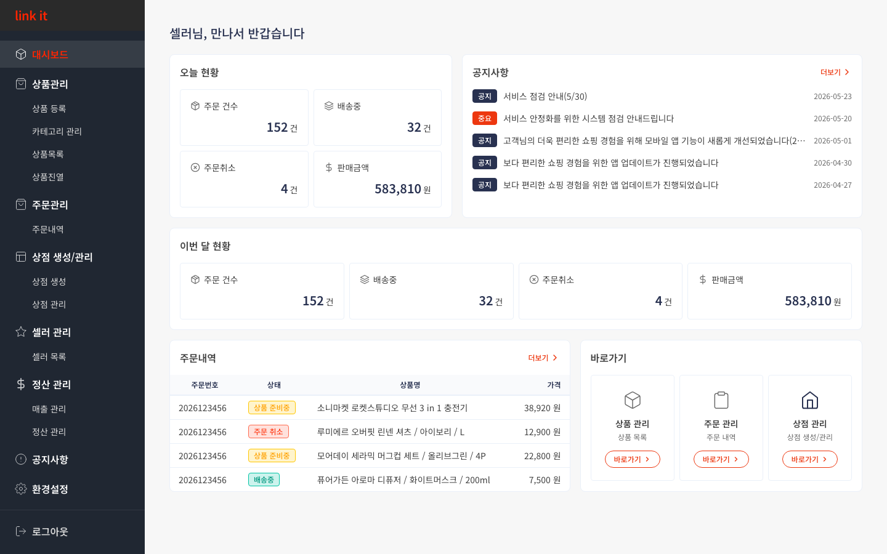

CHAPTER 1
대시보드
홈 화면 · 현황 요약
1
대시보드 홈 화면
로그인 후 가장 먼저 보이는 화면입니다. 오늘·이번 달 주문/배송/매출 수치와 최신 공지, 주요 메뉴 바로가기를 제공합니다.

1
2
3
사용 방법
1
오늘·이번 달 현황 카드 확인
주문 건수, 배송중, 주문 취소, 판매금액을 카드 형태로 오늘과 이번 달 기준으로 각각 표시합니다. 이상 수치가 보이면 해당 메뉴로 바로 이동해 확인하세요.
2
공지사항 업데이트 확인
운영자가 공지한 서비스 점검·업데이트 내용이 표시됩니다.
[중요]
배지가 붙은 공지는 반드시 확인하세요. [더보기]를 클릭하면 전체 공지 목록으로 이동합니다.
3
최근 주문 & 바로가기 활용
하단의 주문 내역 미리보기로 최근 주문 상태를 확인하고, 바로가기 버튼(상품 관리·주문 관리·상점 생성/관리)으로 자주 쓰는 메뉴에 빠르게 접근하세요.
💡 왼쪽 사이드바
로 전체 메뉴에 항상 접근할 수 있습니다. 현재 페이지는 빨간색으로 강조 표시됩니다.
←
이전 챕터
CHAPTER 1 / 8
다음 챕터
2. 상품관리
→